| 프로젝트 파일 | 시작 다음 이전 |
|
프로젝트는 단독으로 구성할 수 없으며 솔루션(.sssx)에 소속되어야 합니다. 프로젝트를 생성하면 솔루션도 같이 생성되어 프로젝트는 솔루션에 소속됩니다. 프로젝트의 구성은 프로젝트 파일(.sspx)과 서비스 시나리오 파일(.ssfx), 메뉴 시나리오 파일(.msfx)로 구성됩니다. 프로젝트의 구성은 은 Workspace Window에서 확인 할 수 있습니다.
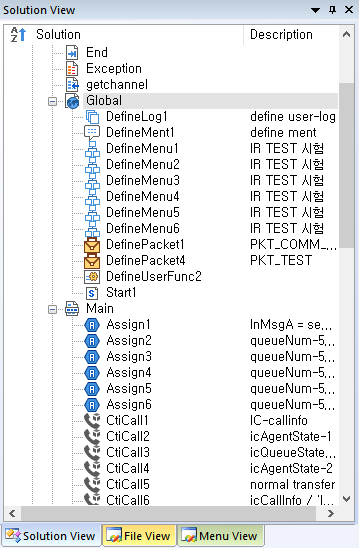
· 새로운 프로젝트를 생성하는 기능으로 File 메뉴의 New Project를 선택하면 New Project Dialog가 팝업 됩니다.
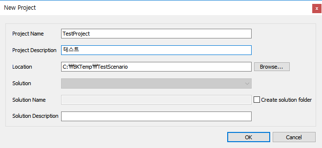
Project Name
생성할 프로젝트 이름을 입력합니다. 이름은 76 Byte를 넘을 수 없습니다.(UTF8 기준으로 한글은 3 Byte로 계산됩니다) OK 버튼을 눌렀을 때 같은이름의 프로젝트 이름이 존재한다면 프로젝트 생성이 되지 않습니다.
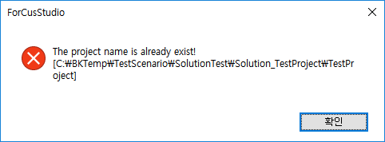
Project Description
어떤 프로젝트인지 설명을 입력합니다.
Location
생성할 프로젝트가 저장되는 폴더를 선택합니다. 폴더를 선택하지 않으면 실행파일 경로에 프로젝트 폴더가 만들어집니다. 프로젝트 이름을 포함하여 전체 경로가 256 Byte를 넘을 수 없습니다.
Solution
생성할 프로젝트가 저장되는 폴더를 선택합니다. 폴더를 선택하지 않으면 실행파일 경로에 프로젝트 폴더가 만들어집니다.
Create solution folder Check Box
체크하면 솔루션 폴더를 생성하며 Solution Name을 입력하는 에디트 박스가 Enable 됩니다.
Solution Name
솔루션 이름을 입력합니다. 솔루션 이름이 없으면 프로젝트 이름 앞에 "Solution_"을 붙여서 솔루션 이름을 만들고 프로젝트와 같은 폴더에 솔루션 파일을 생성합니다.
Solution Description
솔루션 설명을 입력합니다.
· New Project 창은 프로젝트가 오픈되어 있는 상태에서는 다음과 같이 솔루션을 새로 생성할지 오픈된 솔루션에 프로젝트를 추가 할지에 대한 콤보박스가 활성화 되며 새로 솔루션을 생성하면 오픈되어 있는 솔루션 및 프로젝트는 닫히고 새로 생성되며 오픈된 솔루션에 프로젝트를 추가하는 경우는 생성한 프로젝트가 오픈되어 있는 솔루션에 추가됩니다.
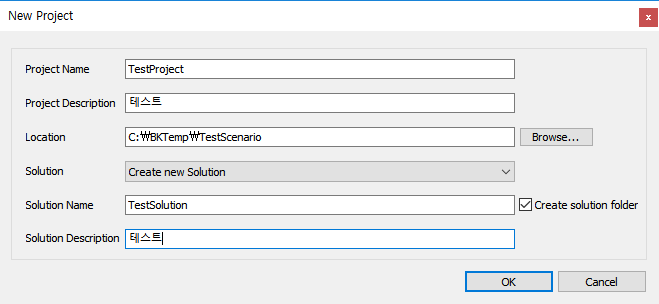
· 프로젝트를 생성하면 기본 시나리오 파일이 자동으로 생성되어 열리게 됩니다. 기본 시나리오 파일은 변경, 삭제가 불가능 합니다.
· 프로젝트 파일을 열기위한 기능으로 File 메뉴의 Open Solution 또는 리본 메뉴 Home > Open > Open Solution 에서 가능합니다. 프로젝트 파일이 솔루션에 소속되어 있기 때문에 솔루션 파일을 오픈해야 합니다.
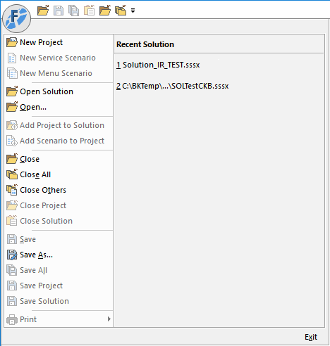 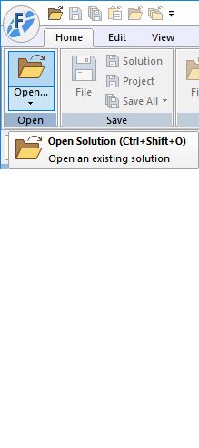
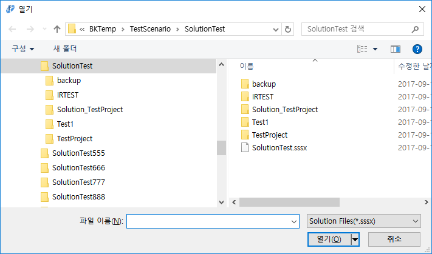
· 기본 열기 파일은 솔루션 파일 확장자인 *.sssx 입니다. · 솔루션이 오픈 되어 있는 상태에서 또 솔루션을 오픈하는 경우는 오픈된 솔루션을 닫고, 오픈하는 솔루션을 열게 됩니다. · 솔루션에 소속된 프로젝트가 한개인 경우는 자동으로 프로젝트 까지 오픈합니다.
· File 메뉴의 Save Solution 또는 리본메뉴의 Home > Save > Solution을 누르면 됩니다. · 솔루션에 소속된 프로젝트의 Description을 변경하는 등 프로젝트 정보를 변경하는 경우에 버튼이 Enable 되며 시나리오 파일을 저장하는 경우에는 자동으로 저장됩니다.
· 리본메뉴의 Project > Oepn Project > Open All Project 를 누르면 됩니다. 또는 콤보박스에서 오픈하지 않은 프로젝트를 하나 씩 선택해서 오픈 할 수도 있습니다. · Solution View, File View 트리 솔루션 항목에서 마우스 오른 버튼을 눌러 팝업 메뉴에서 Open All Project 를 선택해도 됩니다.
· File 메뉴의 Close Solution 또는 리본메뉴의 Home > Close > Solution을 누르면 됩니다. · 솔루션을 닫으면 오픈된 파일 및 프로젝트가 모두 닫히게 됩니다.
· File 메뉴의 Add Project to Solution 으로 생성되어져 있는 프로젝트 파일을 솔루션에 추가할 수 있습니다. · File 메뉴의 New Project 로 프로젝트를 생성하여 솔루션에 추가할 수 있습니다. · Project Workspace의 Solution 항목에서 마우스 오른 버튼을 눌러 메뉴를 팝업하여 Add to Solution > New Project, Existing Project 에서도 가능합니다.
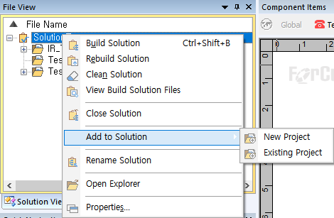
· 솔루션에 소속된 프로젝트가 한개인 경우는 자동으로 프로젝트 까지 오픈되지만 여러개인 경우는 Project Workspace > Solution View, File View 에서 오픈하고자 하는 프로젝트를 선택하여 오픈한다. · 솔루션에 소속된 프로젝트가 여러개 이고 오픈된 프로젝트도 한개 이상일 경우에는 Project Workspace에 선택 되어져(프로젝트 항목 또는 소속된 파일 항목)있는 프로젝트가 활성 프로젝트가 됩니다. 활성프로젝트일 때 처리하는 프로젝트관련 기능은 다음과 같습니다. . 아이템 정보 데이터 생성(Make Item Information Data) . 자동완성 및 시나리오 정보 데이터 맵 생성(Make Auto Complete Dta) . Save Project . Close Project . Build Project . 검색 / 치환 . 북마크 창 팝업 시 아이템 리스트 . Breakpoint 창 팝업 시 아이템 리스트 . Visual Debugging . Excel Import/Export
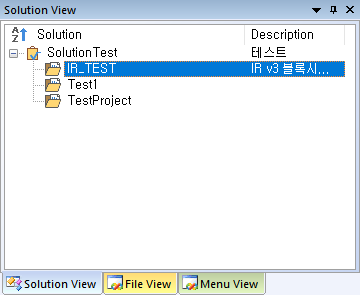
· 프로젝를 오픈하면 자동으로 서비스 시작 시나리오인 Main.ssfx를 오픈합니다. · 프로젝트를 오픈하면 관련된 작업을 항상 하게 됩니다. . 아이템 정보 데이터(IID) 생성 . 자동완성 및 시나리오 정보 데이터 맵 생성 . 북마크 데이터 로드 . Breakpoint 데이터 로드
아이템 정보 데이터(IID) 생성: 오픈한 프로젝트에 포함된 각 시나리오 파일의 아이템과 속성을 읽어서 로컬 DB를 생성합니다. IID DB가 존재하지 않은 경우는 생성하고 변경되고 저장되지 않은 경우는 Update를 수행합니다.
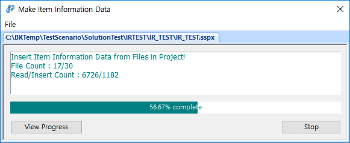
자동완성 및 시나리오 정보 데이터 맵 생성 : IID DB 에서 정보를 쿼리하여 생성을 합니다. 이 맵 데이터는 입력 문자열 자동완성, 검색 및 치환, 속성 창 출력 데이터 제공, 프로젝트 빌드에 사용됩니다.
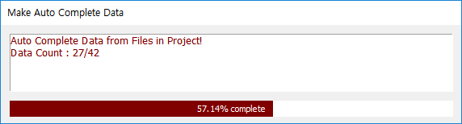
북마크 데이터 로드 - 아이템 북마크 정보를 로드합니다.
중단점 데이터 로드 - 디버깅시에 사용되는 Breakpoint 정보를 로드합니다.
· 프로젝트 파일을 열고 파일을 로드 할 때 경로에 파일이 없는 경우 해당 파일에 대해서 무시, 삭제, 재검색 등을 할 수 있습니다.
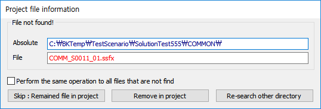
Perform the same operation to all files that are not find Check Box : 체크하면 앞으로 발견되지 않을 모든 파일에 대해서 동일한 처리를 하며 이 다이얼로그가 팝업되지 않습니다. 다른 폴더에서 재 검색의 경우 동일한 처리 중에 파일이 검색되지 않으면 다시 다이얼로그가 팝업됩니다. Skip : Remained file in project Button : 검색되지 않은 파일에 대해서 어떠한 처리도 하지 않고 무시 합니다. Remove in project Button : 검색되지 않은 파일을 프로젝트에서 제거 합니다. Re-search other directory Button : 다른 디렉토리에서 재 검색합니다.
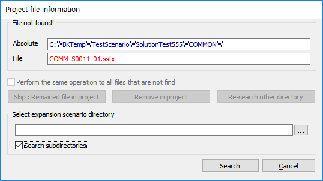 Search subdirectories Check Box : 체크하면 지정한 디렉토리 하위 폴더도 검색합니다. Search Button : 지정한 디렉토리에서 검색하지 못한 파일을 찾고, 파일이 있으면 지정한 디렉토리를 등록합니다. 파일을 찾지 못하면 다시 다이얼로그가 팝업되면서 무시, 삭제, 재검색을 선택` 합니다. Cancel Button : 다시 무시, 삭제, 재검색 선택 다이얼로그로 돌아 갑니다. * Skip : Remained file in project 또는 Remove in project Button을 선택한 경우 무시하거나 제거된 파일 리스트 다이얼로그를 팝업 합니다.
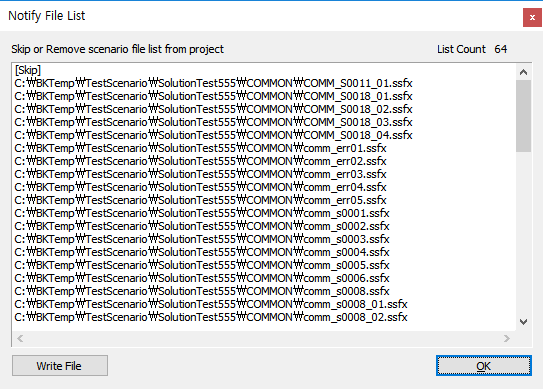
프로젝를 오픈하면 프로젝트 파일의 정보가 표시 됩니다.
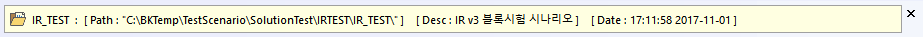
프로젝트명 : [ Path : 프로젝트 경로 ] [ Desc : 프로젝트 설명 ] [ Date : 프로젝트 저장 날자 ]
· File 메뉴의 Save Project 또는 리본메뉴의 Home > Save > Project를 누르면 됩니다. · 프로젝트에 소속된 시나리오 파일의 Description을 변경하는 등 파일 정보를 변경하는 경우에 버튼이 Enable 되며 시나리오파일 편집후 저장의 경우에는 자동으로 저장됩니다.
· File 메뉴의 Close Project 또는 리본메뉴의 Home > Close > Project를 누르면 됩니다. · 프로젝트를 닫으면 열린 모든 시나리오 파일이 닫히므로 저장되지 않은 파일이 있으면 저장 유/무를 확인합니다.
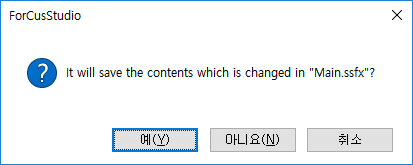
· File 메뉴의 Add Scenario to Project 에서 시나리오 파일을 선택 하거나 New Service Scenario, New Menu Scenario 에서 시나리오 파일을 생성하여 프로젝트에 추가 할 수 있습니다. · Workspace Window의 Solution View 또는 File View 에서 프로젝트 항목 에서 마우스 오른 버튼을 눌러서 메뉴를 팝업하여 Add to Project > Existing ..., New Service ..., New Menu ... 로 도 가능합니다. · 프로젝트가 오픈 되어야 활성화 되며 프로젝트에 같은 이름의 파일이 이미 있다면 추가되지 않습니다.
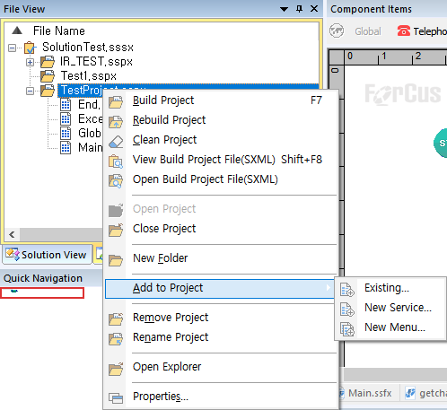
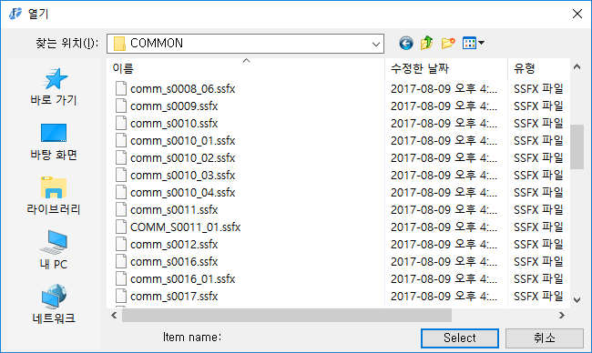
Project Configuration Settings
· 리본 메뉴 Project > Configuration > Project Settings 메뉴를 누르면 프로젝트 설정 창이 팝업 됩니다.
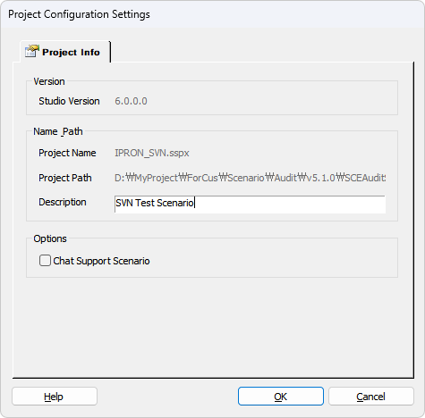
Version Studio Version : ForCusStudio 버전이 표시됩니다.
Name Path Project Name : 프로젝트 이름이 표시됩니다. Project Path : 프로젝트 시나리오 경로가 표시됩니다. Description : 프로젝트 설명을 설정합니다. Workspace > Solution View 의 Project Description 에 표시됩니다.
Options Chat Support Scenario Check Box : 시나리오가 Chat을 지원하며 빌드시 Chat 지원 태그를 생성합니다.
Check 시 Studio 화면상으로 Chat 지원 시나리오임을 표시합니다.
Voice 전용 시나리오 Caption Bar : 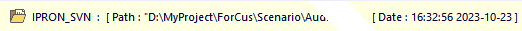
Chat 지원 시나리오 Caption Bar : 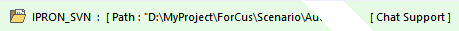 Status Bar : 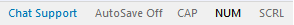
Notes:
· IID - Item Information Data의 약자로 아이템의 정보를 DB화 하여 저장 합니다.
|
| Copyrights(C) Bridgetec.co.kr. All Rights Reserved | 시작 다음 이전 |